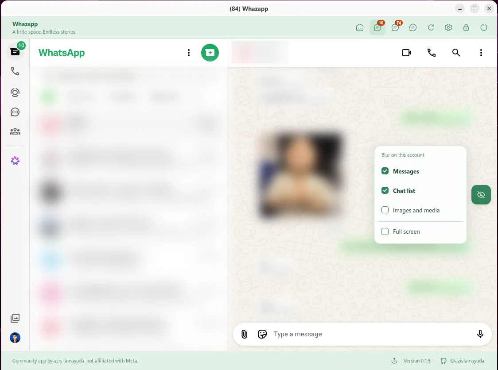
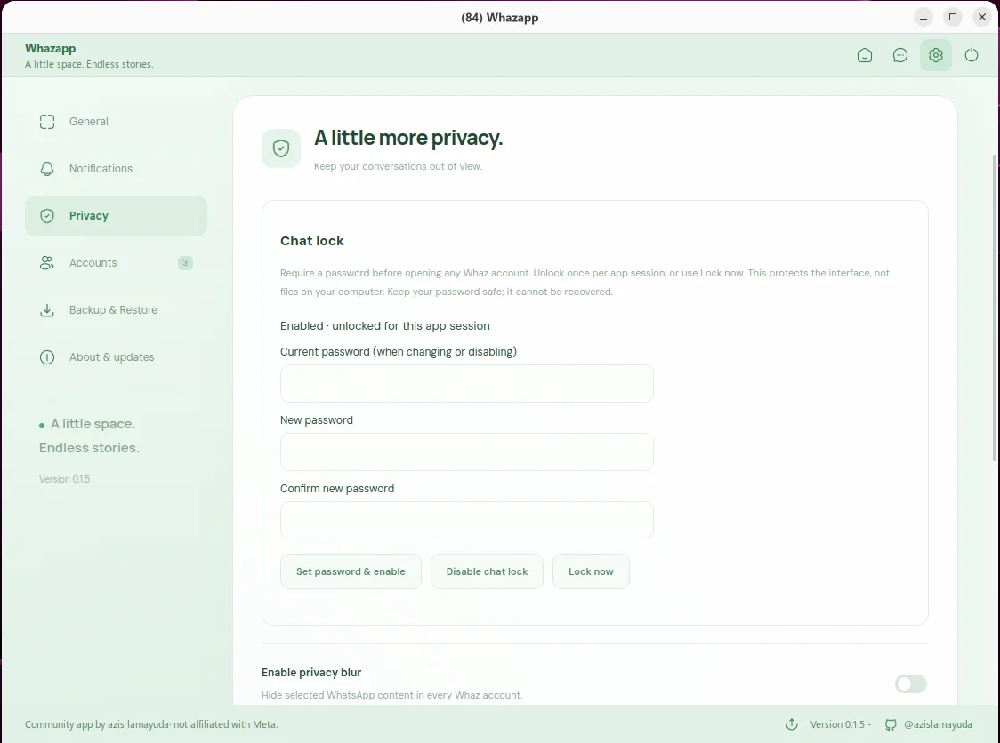

Tampilan
Tangkapan layar Whazapp 0.1.5 di Linux. Klik gambar untuk melihat ukuran penuh.







Yang bisa dilakukan
Semua yang Anda pakai di WhatsApp Web, ditambah hal-hal yang biasanya hilang saat chat dibuka di tab browser.
Beberapa akun dalam satu aplikasi
Sampai tiga akun WhatsApp, Whaz 1 sampai Whaz 3. Setiap akun punya sesi sendiri dan tetap masuk setelah aplikasi ditutup.
Panggilan suara dan video Linux
AppImage membawa mesin WebKit dengan WebRTC sendiri, jadi WhatsApp tidak lagi menolak panggilan di desktop.
Notifikasi dan badge belum dibaca
Notifikasi desktop untuk pesan baru. Di Linux, setiap tombol akun menampilkan jumlah chat yang belum dibaca.
Blur privasi sekali klik Linux
Samarkan isi pesan, daftar chat, gambar dan media, atau seluruh layar. Pilihan disimpan per akun.
Shortcut keyboard Linux
Ctrl + 1 sampai 3 untuk pindah akun, Ctrl + , untuk pengaturan, Ctrl + R untuk memuat ulang.
Cek update yang terverifikasi
Aplikasi mengunduh installer baru, mencocokkannya dengan SHA256SUMS rilis, dan baru menyimpannya ke folder Unduhan kalau cocok.
Kunci chat dengan password
Pasang password apa saja yang Anda mau. Tidak ada aturan panjang minimum atau karakter wajib.
Ringan untuk dipakai seharian Linux
Setiap akun memakai batas memori WebKit yang lebih ketat dan melepas memori lebih awal, tanpa menutup panggilan atau sesi.
Kenapa Whazapp
Native di Linux dan Windows
AppImage untuk Linux x86_64, installer untuk Windows 10 dan 11 x64.
Dibuat dengan Rust dan Tauri
Memakai mesin web dari sistem: WebKitGTK di Linux, WebView2 di Windows.
Tidak perlu browser tambahan
WhatsApp tetap jalan tanpa Chrome atau Firefox yang harus terus terbuka.
Unduhan diverifikasi SHA-256
Setiap rilis menyertakan file SHA256SUMS yang bisa Anda periksa sendiri.
Unduh Whazapp 0.1.5
Linux
Whazapp_0.1.5_amd64.AppImage
Untuk Linux x86_64. Jadikan file bisa dijalankan dengan chmod +x, lalu buka.
Windows
Whazapp_0.1.5_x64-setup.exe
Untuk Windows 10 dan 11, 64-bit.
Unduh setup.exeInstaller ini belum ditandatangani, jadi Windows SmartScreen mungkin menampilkan peringatan. Pilih More info lalu Run anyway.
Periksa file yang diunduh
Unduh SHA256SUMS ke folder yang sama dengan installer, lalu jalankan di Linux:
sha256sum -c SHA256SUMSSetiap file yang utuh ditandai OK. Kalau Anda hanya mengunduh satu installer, tambahkan --ignore-missing.
Kalau hasilnya FAILED, hapus file itu dan unduh ulang.